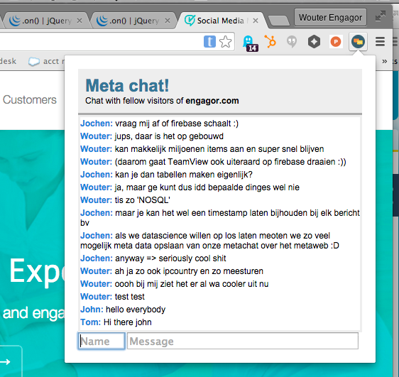

|

MetaChat← back to woutersmet.github.io experimentsChat with fellow visitors of the site you are onMetaChat is a Chrome extension that shows a chat window where you can chat with people also on the same site.To run the program:
On this page you can see / participate in sites that people have used meta chat on so far: RoomsMeta chat!Chat with fellow visitors of [pick a room on the left] |